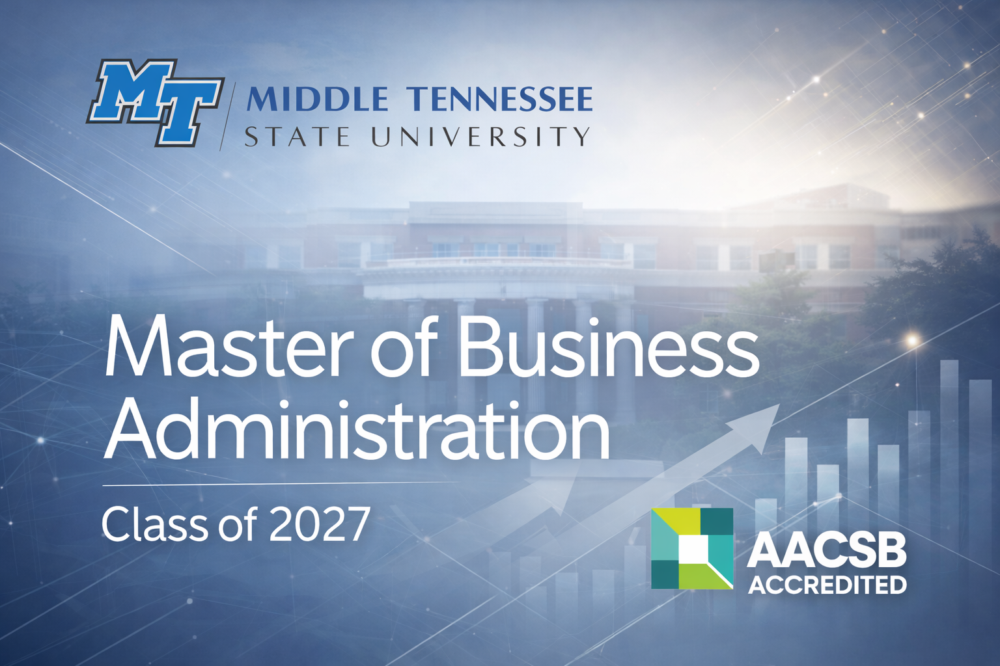

Master of Business Administration (MBA)
Pursuing an MBA alongside my engineering degree allows me to strengthen the leadership, strategic, and decision-making skills that complement technical work. The program emphasizes strategy, operations, finance, and organizational leadership, helping me understand how technical efforts scale within real organizations. By combining business education with engineering, I am developing the ability to evaluate tradeoffs, communicate across technical and non-technical teams, and contribute to decisions that balance performance, people, and long-term impact. This path supports my goal of working at the intersection of engineering execution and organizational leadership.